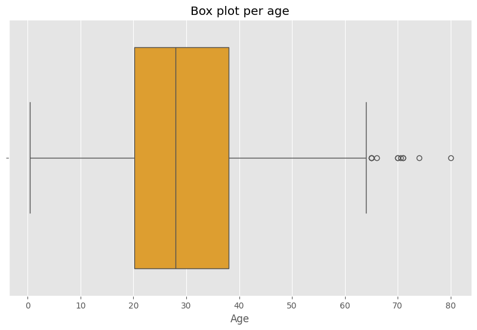
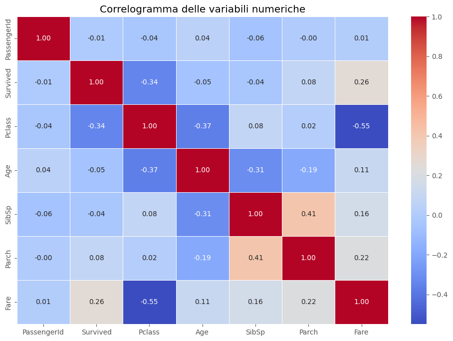
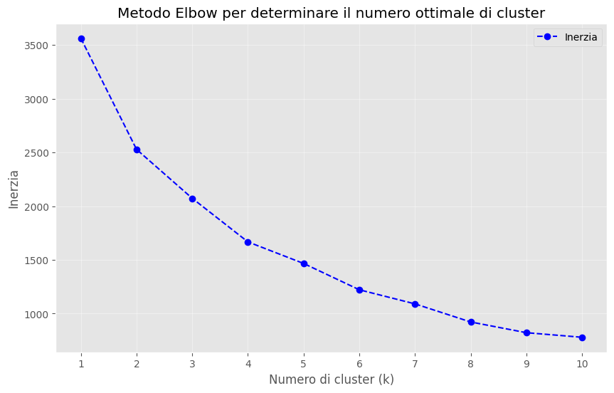

# Importa le librerie necessarieimport pandas as pd# Leggi il datasetdataset = pd.read_csv("./titanic.csv")# Mostra le prime righe del dataset per comprendere la strutturadataset.head()
PassengerId
Survived
Pclass
Name
Sex
Age
SibSp
Parch
Ticket
Fare
Cabin
Embarked
0
1
0
3
Braund, Mr. Owen Harris
male
22.0
1
0
A/5 21171
7.2500
NaN
S
1
2
1
1
Cumings, Mrs. John Bradley (Florence Briggs Th...
female
38.0
1
0
PC 17599
71.2833
C85
C
2
3
1
3
Heikkinen, Miss. Laina
female
26.0
0
0
STON/O2. 3101282
7.9250
NaN
S
3
4
1
1
Futrelle, Mrs. Jacques Heath (Lily May Peel)
female
35.0
1
0
113803
53.1000
C123
S
4
5
0
3
Allen, Mr. William Henry
male
35.0
0
0
373450
8.0500
NaN
S
Importazione delle librerie necessarie
Importiamo le librerie per la manipolazione dei dati (pandas e numpy) e per le visualizzazioni grafiche (matplotlib e seaborn).
# Cell 1: Importazione delle librerie necessarie# Importiamo le librerie per la manipolazione dei dati (pandas e numpy)# e per le visualizzazioni grafiche (matplotlib e seaborn).import pandas as pdimport numpy as npimport matplotlib.pyplot as pltimport seaborn as snsimport warnings# Ignora i warningwarnings.filterwarnings("ignore")# Configuriamo lo stile dei grafici per renderli più leggibiliplt.style.use('ggplot')plt.rcParams['figure.figsize'] = (10, 6) # Imposta la dimensione delle figure
Informazioni di base sul dataset
# Cell 3: Informazioni di base sul dataset# Stampiamo le dimensioni del dataset (numero di righe e colonne) e le informazioni generaliprint("Dimensioni del dataset:", dataset.shape) # Dimensioni del datasetdataset.info() # Informazioni generali su tipi di dati e conteggio dei valori non nulli# Calcoliamo il numero di valori mancanti per ogni colonnamissing_values = dataset.isnull().sum()missing_values[missing_values >0] # Mostriamo solo le colonne con valori mancanti
# Cell 4: Statistiche descrittive# Generiamo statistiche descrittive (media, deviazione standard, min, max, ecc.) per tutte le variabili numerichedataset.describe()
PassengerId
Survived
Pclass
Age
SibSp
Parch
Fare
count
891.000000
891.000000
891.000000
714.000000
891.000000
891.000000
891.000000
mean
446.000000
0.383838
2.308642
29.699118
0.523008
0.381594
32.204208
std
257.353842
0.486592
0.836071
14.526497
1.102743
0.806057
49.693429
min
1.000000
0.000000
1.000000
0.420000
0.000000
0.000000
0.000000
25%
223.500000
0.000000
2.000000
20.125000
0.000000
0.000000
7.910400
50%
446.000000
0.000000
3.000000
28.000000
0.000000
0.000000
14.454200
75%
668.500000
1.000000
3.000000
38.000000
1.000000
0.000000
31.000000
max
891.000000
1.000000
3.000000
80.000000
8.000000
6.000000
512.329200
Analisi delle variabili categoriche
Identifichiamo le colonne con dati categorici e visualizziamo il conteggio di ciascuna categoria. Questo ci aiuta a capire meglio la distribuzione delle categorie.
# Cell 5: Analisi delle variabili categoriche# Identifichiamo le colonne con dati categorici e visualizziamo il conteggio di ciascuna categoria.# Questo ci aiuta a capire meglio la distribuzione delle categorie.categorical_columns = dataset.select_dtypes(include=['object']).columns # Trova le colonne categorichefor column in categorical_columns:print(f"Conteggio valori per la colonna '{column}':")print(dataset[column].value_counts()) # Conteggio dei valori per ogni categoriaprint("\n")
Conteggio valori per la colonna 'Name':
Name
Braund, Mr. Owen Harris 1
Boulos, Mr. Hanna 1
Frolicher-Stehli, Mr. Maxmillian 1
Gilinski, Mr. Eliezer 1
Murdlin, Mr. Joseph 1
..
Kelly, Miss. Anna Katherine "Annie Kate" 1
McCoy, Mr. Bernard 1
Johnson, Mr. William Cahoone Jr 1
Keane, Miss. Nora A 1
Dooley, Mr. Patrick 1
Name: count, Length: 891, dtype: int64
Conteggio valori per la colonna 'Sex':
Sex
male 577
female 314
Name: count, dtype: int64
Conteggio valori per la colonna 'Ticket':
Ticket
347082 7
CA. 2343 7
1601 7
3101295 6
CA 2144 6
..
9234 1
19988 1
2693 1
PC 17612 1
370376 1
Name: count, Length: 681, dtype: int64
Conteggio valori per la colonna 'Cabin':
Cabin
B96 B98 4
G6 4
C23 C25 C27 4
C22 C26 3
F33 3
..
E34 1
C7 1
C54 1
E36 1
C148 1
Name: count, Length: 147, dtype: int64
Conteggio valori per la colonna 'Embarked':
Embarked
S 644
C 168
Q 77
Name: count, dtype: int64
Box plot per individuare possibili outliers
Generiamo un box plot per ogni variabile numerica per visualizzare gli outliers
# Cell 7: Box plot per individuare possibili outliersplt.figure()sns.boxplot(x= dataset['Age'], color=(250/255, 166/255, 19/255)) # Box plot per la colonna attualeplt.title(f"Box plot per {'age'}") # Titolo per il grafico attualeplt.show()

Chi sono gli outliers?
# Funzione per trovare gli outliersdef trova_outliers(dataset, colonna): q1 = dataset[colonna].quantile(0.25) q3 = dataset[colonna].quantile(0.75) iqr = q3 - q1 lower_bound = q1 -1.5* iqr upper_bound = q3 +1.5* iqrreturn dataset[(dataset[colonna] < lower_bound) | (dataset[colonna] > upper_bound)]# Trova gli outliers nella colonna "Partite_giocate"outliers = trova_outliers(dataset, 'Age')# Stampa i nomi dei giocatori con outliersprint("Giocatori con valori outlier:")print(outliers['Name'].tolist())
Giocatori con valori outlier:
['Wheadon, Mr. Edward H', 'Ostby, Mr. Engelhart Cornelius', 'Goldschmidt, Mr. George B', 'Connors, Mr. Patrick', 'Duane, Mr. Frank', 'Millet, Mr. Francis Davis', 'Artagaveytia, Mr. Ramon', 'Barkworth, Mr. Algernon Henry Wilson', 'Mitchell, Mr. Henry Michael', 'Crosby, Capt. Edward Gifford', 'Svensson, Mr. Johan']
Trasformo vi valori Outliers nella media
# Funzione per sostituire gli outliers con la mediadef sostituisci_outlier_con_media(dataset, colonna): q1 = dataset[colonna].quantile(0.25) q3 = dataset[colonna].quantile(0.75) iqr = q3 - q1 lower_bound = q1 -1.5* iqr upper_bound = q3 +1.5* iqr media_senza_outlier = dataset[colonna][(dataset[colonna] >= lower_bound) & (dataset[colonna] <= upper_bound)].mean() dataset[colonna] = dataset[colonna].apply(lambda x: media_senza_outlier if x < lower_bound or x > upper_bound else x)# Sostituisci gli outliers con la media nella colonna "Partite_giocate"sostituisci_outlier_con_media(dataset, 'Age')# Verifica del dataset aggiornatoprint("Dataset aggiornato con outliers sostituiti:")print(dataset.head())
Dataset aggiornato con outliers sostituiti:
PassengerId Survived Pclass \
0 1 0 3
1 2 1 1
2 3 1 3
3 4 1 1
4 5 0 3
Name Sex Age SibSp \
0 Braund, Mr. Owen Harris male 22.0 1
1 Cumings, Mrs. John Bradley (Florence Briggs Th... female 38.0 1
2 Heikkinen, Miss. Laina female 26.0 0
3 Futrelle, Mrs. Jacques Heath (Lily May Peel) female 35.0 1
4 Allen, Mr. William Henry male 35.0 0
Parch Ticket Fare Cabin Embarked
0 0 A/5 21171 7.2500 NaN S
1 0 PC 17599 71.2833 C85 C
2 0 STON/O2. 3101282 7.9250 NaN S
3 0 113803 53.1000 C123 S
4 0 373450 8.0500 NaN S
Correlazioni e Correlogramma
Filtriamo solo le colonne numeriche per calcolare la matrice di correlazion
# Cell 8: Correlazioni e Correlogramma# Filtriamo solo le colonne numeriche per calcolare la matrice di correlazionenumerical_dataset = dataset.select_dtypes(include=[np.number]) # Seleziona solo le colonne numerichecorrelation_matrix = numerical_dataset.corr() # Calcoliamo la matrice di correlazione# Visualizziamo la matrice di correlazione con una heatmapplt.figure(figsize=(12, 8)) # Imposta la dimensione della figurasns.heatmap(correlation_matrix, annot=True, cmap="coolwarm", fmt=".2f", linewidths=0.5) # Heatmap con annotazioniplt.title("Correlogramma delle variabili numeriche") # Titolo per la heatmapplt.show()

Analisi Cluster (Unsupervised)
calcolo il numero di Cluster con metodo Elbow
Il metodo Elbow aiuta a trovare il giusto compromesso tra semplicità del modello e accuratezza, scegliendo 𝑘 k dove il miglioramento della performance diminuisce drasticamente.
from sklearn.cluster import KMeansfrom sklearn.preprocessing import StandardScalerfrom sklearn.impute import SimpleImputerimport matplotlib.pyplot as pltimport pandas as pd# Supponiamo che 'dataset' sia già definitovariabili = dataset.columns.tolist()[3:]# Seleziona solo le colonne numerichevariabili_numeriche = dataset[variabili].select_dtypes(include=['float64', 'int64']).columns.tolist()# Usare un imputer per gestire i valori NaNimputer = SimpleImputer(strategy='mean')dati_filled = imputer.fit_transform(dataset[variabili_numeriche])# Standardizzare le variabiliscaler = StandardScaler()dati_scalati = scaler.fit_transform(dati_filled)# Calcolare l'inerzia per diversi valori di kinerzia = []valori_k =range(1, 11) # Proviamo da 1 a 10 clusterfor k in valori_k: kmeans = KMeans(n_clusters=k, random_state=42) kmeans.fit(dati_scalati) inerzia.append(kmeans.inertia_)# Tracciare il grafico del metodo Elbowplt.figure(figsize=(10, 6))plt.plot(valori_k, inerzia, marker='o', linestyle='--', color='b', label='Inerzia')plt.xlabel('Numero di cluster (k)')plt.ylabel('Inerzia')plt.title('Metodo Elbow per determinare il numero ottimale di cluster')plt.xticks(valori_k)plt.legend()plt.grid(alpha=0.4)plt.show()

Analizzo i 4 Cluster
# Importare le librerie necessarieimport pandas as pdimport numpy as npimport matplotlib.pyplot as pltfrom sklearn.cluster import KMeansfrom sklearn.preprocessing import StandardScalerfrom matplotlib.patches import Ellipse# Visualizzare le prime righe del dataset per capire la strutturaprint(dataset.head())# Selezionare solo le colonne numerichevariabili = dataset.select_dtypes(include=[np.number]).columns.tolist()# Rimuovere le righe con valori NaNdataset_clean = dataset.dropna(subset=variabili)# Standardizzare le variabiliscaler = StandardScaler()dati_scalati = scaler.fit_transform(dataset_clean[variabili])# Creazione del modello K-Means con k=2kmeans = KMeans(n_clusters=2, random_state=42)# Adattare il modello ai dati scalatikmeans.fit(dati_scalati)# Aggiungere i cluster al dataset originaledataset_clean['Cluster'] = kmeans.labels_# Visualizzare la distribuzione dei clusterprint(dataset_clean['Cluster'].value_counts())# Visualizzare i cluster utilizzando due variabili a scopo esemplificativoplt.figure(figsize=(10, 6))plt.scatter(dati_scalati[:, 0], dati_scalati[:, 1], c=kmeans.labels_, cmap='viridis', alpha=0.6, edgecolor='k')plt.xlabel(variabili[0])plt.ylabel(variabili[1])plt.title('Visualizzazione dei Cluster K-Means con Ellissi')plt.colorbar(label='Cluster')# Evidenziare i cluster con un perimetro (utilizzando ellissi attorno ai dati) con colori differenti per ogni clustercentroidi = kmeans.cluster_centers_colori_ellissi = ['red', 'blue']for i inrange(2): punti_cluster = dati_scalati[kmeans.labels_ == i] ellisse = Ellipse(xy=(np.mean(punti_cluster[:, 0]), np.mean(punti_cluster[:, 1])), width=2* np.std(punti_cluster[:, 0]), height=2* np.std(punti_cluster[:, 1]), edgecolor=colori_ellissi[i], fc='None', lw=2, linestyle='--', label=f'Cluster {i}') plt.gca().add_patch(ellisse)plt.legend()plt.show()# Calcolare la media delle variabili per ogni clustercaratteristiche_cluster = dataset_clean.groupby('Cluster')[variabili].mean()# Visualizzare le caratteristiche distintive di ogni clusterprint("\nCaratteristiche distintive di ogni cluster:\n")print(caratteristiche_cluster)# Spiegazione in forma di testo delle caratteristiche di ogni clusterfor i inrange(2):print(f"\nCaratteristiche del Cluster {i}:")for variabile in variabili: valore = caratteristiche_cluster.loc[i, variabile]print(f" - {variabile}: {valore:.2f}")
PassengerId Survived Pclass \
0 1 0 3
1 2 1 1
2 3 1 3
3 4 1 1
4 5 0 3
Name Sex Age SibSp \
0 Braund, Mr. Owen Harris male 22.0 1
1 Cumings, Mrs. John Bradley (Florence Briggs Th... female 38.0 1
2 Heikkinen, Miss. Laina female 26.0 0
3 Futrelle, Mrs. Jacques Heath (Lily May Peel) female 35.0 1
4 Allen, Mr. William Henry male 35.0 0
Parch Ticket Fare Cabin Embarked
0 0 A/5 21171 7.2500 NaN S
1 0 PC 17599 71.2833 C85 C
2 0 STON/O2. 3101282 7.9250 NaN S
3 0 113803 53.1000 C123 S
4 0 373450 8.0500 NaN S
Cluster
1 466
0 248
Name: count, dtype: int64
Le variabili selezionate per il clustering rappresentano aspetti cruciali per l’analisi in questione. Escludendo le prime tre colonne, che presumibilmente contengono identificatori (come nome della squadra, giocatore, o altre informazioni descrittive), ci concentriamo sulle variabili numeriche che contengono dati utili per identificare somiglianze tra le osservazioni.
Questo ci permette di ottenere cluster significativi basati su caratteristiche quantitative comuni.
Decision Tree
Divisione del dataset in training e test set
Suddividiamo il dataset in un training set e un test set, utilizzando il 70% dei dati per l’addestramento e il 30% per i test.
Addestramento del modello di Decision Tree
In questa cella, creeremo e addestreremo un modello di Decision Tree utilizzando il training set.
# Importare le librerie necessariefrom sklearn.model_selection import train_test_splitfrom sklearn.tree import DecisionTreeClassifierfrom sklearn.metrics import classification_report, accuracy_score# Selezionare le feature e la variabile target, escludendo 'Vittorie', 'Pareggi' e 'Sconfitte'X = dataset[['Age','Pclass']]y = dataset['Survived']# Dividere il dataset in training e test setX_train, X_test, y_train, y_test = train_test_split(X, y, test_size=0.3, random_state=42)# Creare il modello Decision Tree con un limite alla profonditàmodel = DecisionTreeClassifier(random_state=42, max_depth=3)model.fit(X_train, y_train)# Fare predizioni sul test sety_pred = model.predict(X_test)# Visualizzare i risultatiprint("Classification Report:")print(classification_report(y_test, y_pred))print("Accuracy:", accuracy_score(y_test, y_pred))
# Importare le librerie per la visualizzazionefrom sklearn.tree import plot_treeimport matplotlib.pyplot as plt# Visualizzare l'albero decisionale con dimensioni ridotte e senza impuritàplt.figure(figsize=(10, 8)) # Dimensione ridotta del graficoplot_tree( model, feature_names=X.columns, class_names=['morto', 'vivo'], filled=True, impurity=False, rounded=True)plt.show()